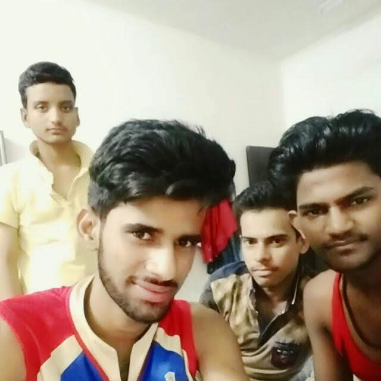
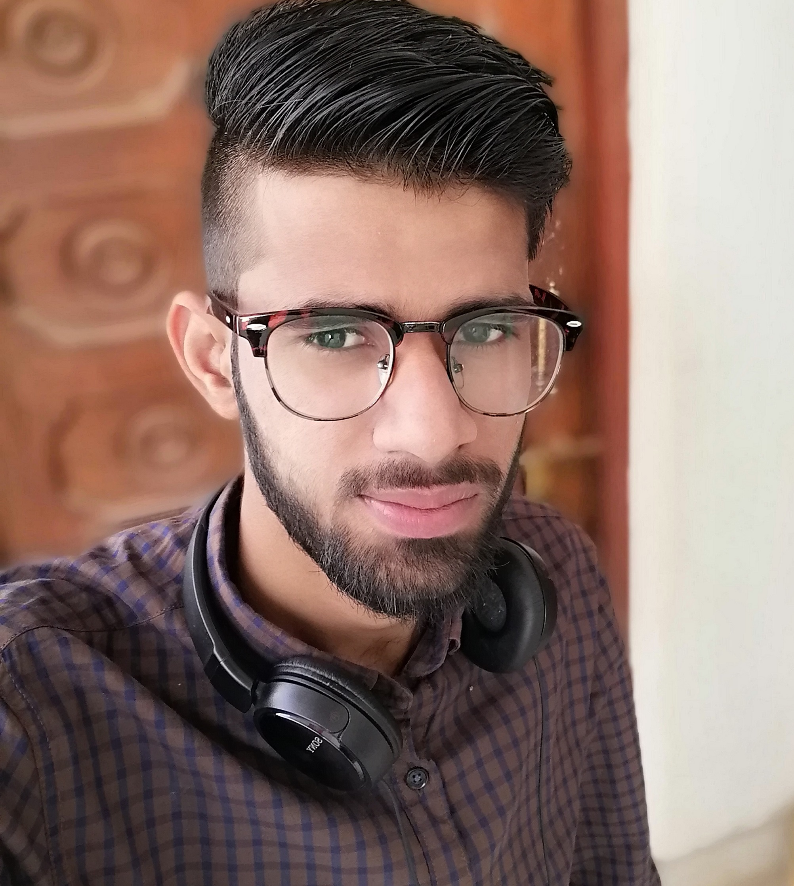
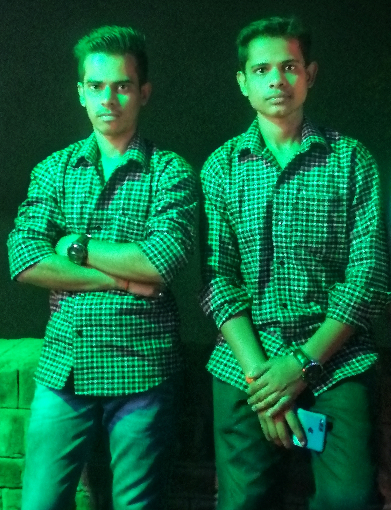
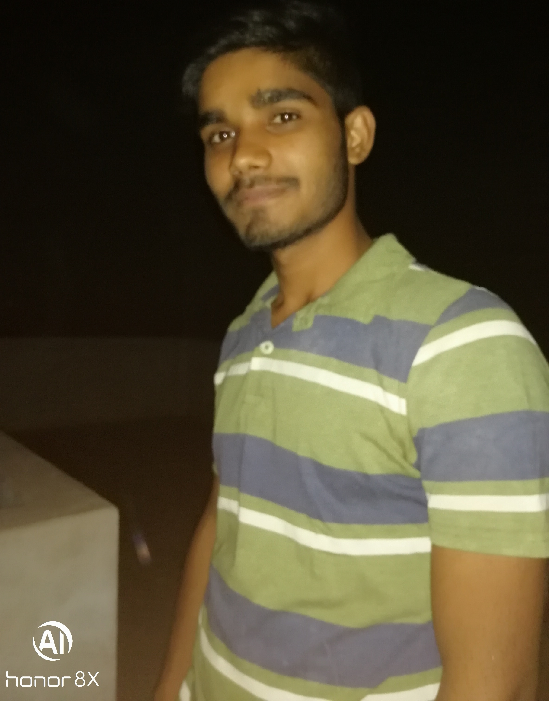
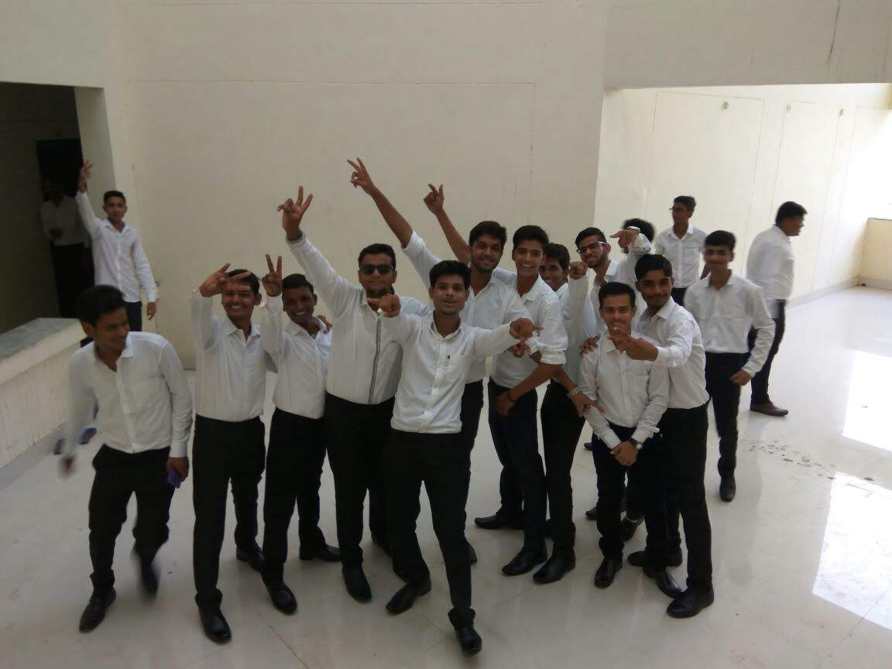
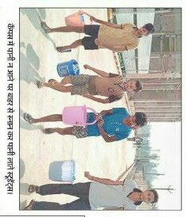
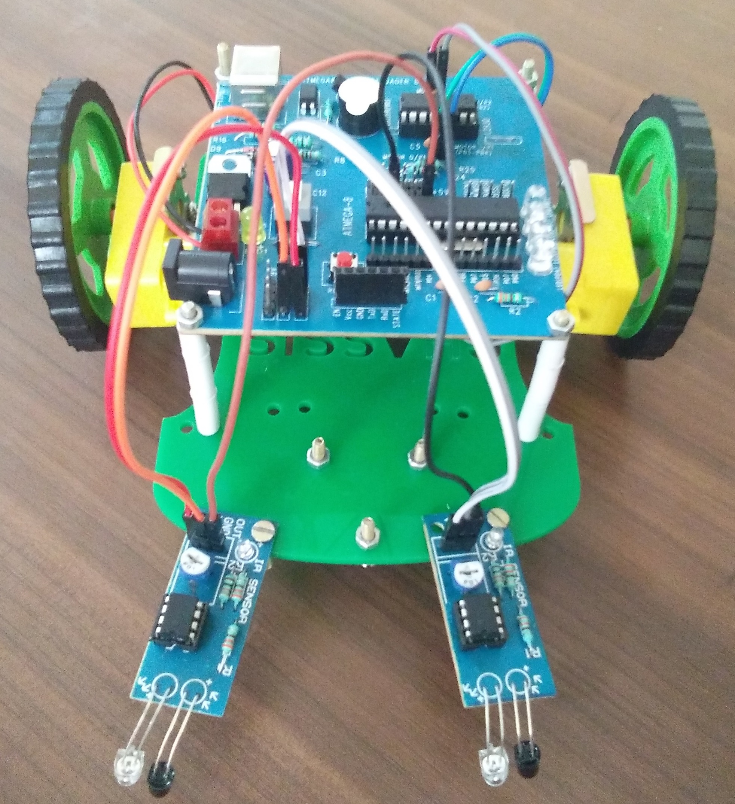
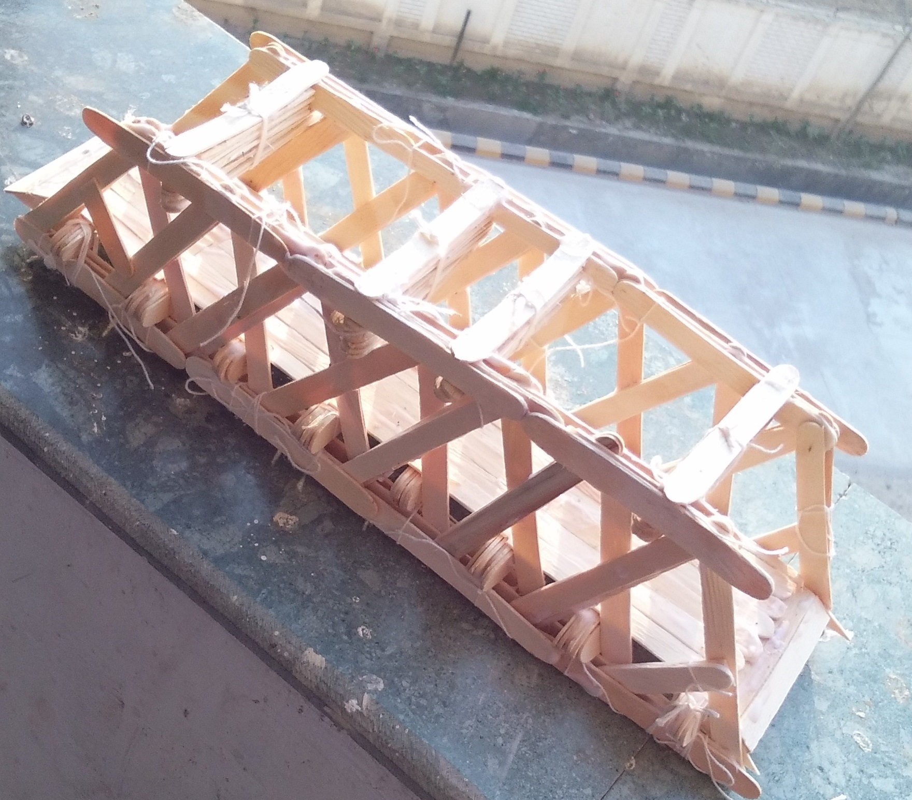

It was the day when I get admission in my college. One evening before that day, I and my dad started our journey to the college through train. That train (Utsarg Express) was the only train to Kannauj from my home town and It was about 12 hour journey. I want to say something that before my counselling, I never heard the name of Kannauj and where the place is. But that day I was very excited that I am going to future college and will make new friends. The time of train was 10:53 in morning to reach Kannauj but it arrived there at 01:00pm in noon. We had to reach Tirwaganj which was 18 km far from the railway station. We take an auto rickshaw which was going to Tirwaganj and I saw that it was full of the students who were wanted to go to the same place. In between the way, auto rickshaw stopped somewhere I saw a college, it was beautiful and big I thought that it was mine college but badly it was Government medical college, Tirwa.
We reached the college and saw some under construction building and some constructed. My admission was going in room no 205. After got admission we went to see the hostel. Hostel’s Room no 202 was allocated to me. We see the whole campus but it was not like that as I expected in my dreams how my college should be. While we were leaving a lady came to me and asked, “how is the college?”. I hesitated and replied that it was beautiful and good. Then I thought that I had seen her somewhere, I remembered and realised that I saw her picture on my college website. She was my college director Dr. Neelam Shrivastava. Also I met my first college friend here, his name was Suhail Iqbal. He also came there with his dad. We shared phone numbers and get introduced each other. We both had allotted hostel room together, his room was 203. The classes were decided to start by 10th Aug. So we came back to Kannauj to take bus to Kanpur and then from Kanpur to home. Suhail and his dad came with us till Tirwaganj and then they went to Moradabad.
20 Aug 2017, Sunday

It was the day when I came back to college hostel to stay there. College has started from 10th August but I was late because I had some fever and also don’t want to go that college. But I had to go. We (Me and dad) came here by same train and this time it was not late. We came to hostel and my dad talk to warden Santosh Sir then I entered to my room. There I saw a guy was lying in my room. He was Tahsin Khan. He was not my roommate and he also belonged to Ballia. Tahsin went out and called my roommates. They were Saurabh Kushwaha(CE), Rohit Singh(CE) and Prateek Dubey(CS). Prateek was playing Cricket at college that time, Satyam Singh phone called him and talk with the sound like warden sir and say to come immediately. There were only three wardrobes in every room in the hostel. And all three were occupied by them. Now the question arises that where would I put my clothes and all things. Then, all my future friends/hostel neighbours (Satyam Singh, Shiv Shakti Rai, Vivekanand, Sujeet Kumar, Tahsin Khan, Neeraj Singh) came to my room and negotiate with my roommates to share the wardrobe with me. After a long argument Saurabh decided to share his Almira with me. Prateek was talking to everyone with toxic language like abusive word in every sentence. I belong to the family where abusing is bad manner and till then none of my friend was like Prateek. I decided that I will not make him friend.

When everything was sorted out then I and Dad went to Tirwa market to buy all daily needs, fruits, and some notebooks and had lunch there at Shukla Restaurant. My dad stayed in hostel for that day because returning ticket was on next day. Next day in morning dad bless me and told to make friends, don’t quarrel here with anyone, study by heart and many more things and then leave the hostel to go home. Rohit Singh is student of civil engineering. He is from Balrampur and he was class representative in the first two semesters. In the hostel, he mostly lived alone and studied alone in the common hall. He was not too much friendly with our roommates. Saurabh Kushwaha is also student of civil engineering and he is from Kanpur. He was also good in computer programming knowledge but didn’t take that branch. Saurabh was too much friendly with the hostellers and he is slightly aggressive too, he had fight with some boys during first year. He is very good in study and he also plays too many mobile games. Prateek Dubey is from Azamgarh and he is the student of Computer Science & Engineering. He is a very tall, funny, helping and athletic boy. He plays a lot of games and sports. He sleeps too much, if there is holiday then he can sleep whole day, I can say that it’s his talent.
I don’t know how Prateek became my one of best friend in college. There are a lot of dissimilarities between us. He is a tall boy and I am short. He is aggressive and speaks loud and I am a shy and slow speaking boy. He is a night awake and I am early riser. He is slightly lazy and I am more active and also many more differences. But he is a sweet guy.
21 Aug 2017, Monday
It was my first day in college. I was so much excited and ready to enjoy my first day in college. I asked Suhail Iqbal that when he would go to college, take me with him. We went college and the first class was scheduled for Engineering Mathematics, Swati Mishra ma’am was taking class. Although, I missed the early classes so I couldn’t understand anything. I asked to a skinny, tall boy sat beside me, named Siddharth Mishra, “which topic is going on”. He told me everything and promised me to teach me my missed topics. After that Ankit Pathak sir came to teach C Programming and there was no class further that day. We came back and take my first lunch in the mess. That day I made one more friend in college after Suhail, he was Siddharth. Siddharth was very intelligent student in every subjects and he was also very good in Badminton.
22 Aug 2017, Tuesday
That day was holiday (I don’t remember why) and my roommates Prateek & Saurabh woke up at 11:00 am. I usually wake up early in the morning. That day I also wake but I was feeling lonely and sad because I was missing my parents and home. I made phone call to my mom and talk about 2 hours while sitting in common hall. I talk to my mom at least once or twice a day everyday. I love my family soo much.
After lunch, when I was returning from mess , my super senior Rajat Sir and his friends stopped me and told to give my introduction. I was mild anger that why should I get introduced to a stranger. But they replied me politely that you should respect seniors and told me many rules which I had to follow while being as fresher in hostel. Later I apologise them and answered their every questions. After about 20 minutes conversation they let me go.
25 Aug 2017, Friday
On that day when I went college, I saw a girl in my class. I hadn’t noticed her in last days. She was damn beautiful and attractive. Her name was Shivangi Dubey (I asked her name to Siddharth). I was slightly attracted towards her but later I realised that she is girlfriend of our current Class Representative Rohit Yadav. I swear on my mother, after realising that she have boyfriend I never look at her and I didn’t see her that way. Her Roll Number is after mine i.e. 49, and she is also in my lab group. Our lab group is named S group because every members of our group are named by ‘S’, they are Shiv Kumar, Shivangi Dubey, Shivani Rai, Shruti Mishra & Siddharth Mishra.
01 Sept 2017, Friday

On that day I made my first appearance on Social Media. I downloaded WhatsApp, because every assignments and class information was provided through it. I contacted CR after the class told to add me to the college WhatsApp group and he did it.
On the same day my younger brother Aashu (Aashish) came there to meet me. My brother is my best friend. We studied in the same class from beginning to 12th and also we do everything together from studying, eating, playing to doing craziness. He also got admission in Ashoka Institute, Varanasi in same year in Bio Technology course (He had chosen PCB in intermediate). Aashu stayed here for 2 days and went back his college on 3rd Sept morning.
03 Sept 2017, Monday

In CAEG (Computer Aided Engineering Graphics) class that day, we were sitting roll number wise. Here I met my best friend in college Shiv Kumar. He was also our mess in charge of first floor. He is my best friend now, We sit together in the class and my roll number is next to him so we also sit in the exam together. Now we (I and Shiv Kumar) do everything by discussing each other. Before coming college, we discuss everything like- ‘Are today’s lectures worth it or not’, ‘Are you coming college or not’, ‘Have you done homework or not’, ‘Have you put the lecture notes or not’ blah blah blah… . He is not my roommate neither in hostel nor in Tirwa but he shares to me everything and also ask about everything when he is going to buy something that which thing should he buy and which is not. I can say that he is the brother from another mother😍.
I also make some more friends in the next few days, they are Abhishek Patel, Parimal Srivastava, Umar Singh and Prince Kr Gupta from my class and Satyam Singh, Neeraj, Shiv Shakti, Saurabh Kushwaha and many more in the hostel.
05 Sept 2017, Tuesday
From that day our fresher party’s audition had started. Fresher Party was decided to be held on 16th September. Neither I know how to dance nor I am good in singing. So I decided to take part in Fashion Show, I went for audition but I was rejected because of my small height 😞. I was sad but what could I do so I forgot it.
13 Sept 2017, Wednesday
It was special day for me- “That day was my birthday 🎂”. I got many phone calls early in the morning from my parents, brother, sister, bhaiya, mama ji and mausi ji. It was my first birthday which I was not celebrating with my family. But friends are family in the hostel, my roommates Prateek, Saurabh and Rohit along with other friends went Tirwa, brought birthday cake and in the evening after playing Volleyball, I cut cake and celebrate my birthday. At that time, I had only a few friends but my room was full of about 40 boys. I don’t know half of them but they were in my room. I enjoyed very much.
16 Sept 2017, Saturday

Finally, it was the day means Fresher Party day. Our dress code was white shirt and black pant without belt. We all become fresh and dressed well for the party before the time. When the whole hostel was going towards college in same dress, it was awesome to see. It was started about 5:00 pm and at about 9:00 director ma’am told to stop because she didn’t want late night party. There were many students who participated in different songs, dances, skit, stand up and fashion show. At the end, Mr. & Miss fresher was announced. Shivangi Dubey and Mani kiran became Miss and Mr. Fresher respectively. We enjoyed very much, clicked many photos and eat different dishes.
I also found that my roommate Saurabh is more toxic than Prateek and he also used to Smoke and Drink. He told me before about that but I had never seen him. Saurabh, some hostellers and some seniors drunk in room no 209 that day. I also want to mention that I never smoke and drink and also never want to do so.
25 Sept 2017, Monday
Our first class test had started that day. As we had 5 subjects so it was scheduled to 2 subjects per day and continued to three days. First test experience in college was very good because I had got best marks in C Programming, Engineering Mathematics and also got highest marks in Engineering Mechanics subject in the class. Those were NAVRATRI days and there was holiday after exams so we could go to home after class test. I phone called dad and told him for train ticket reservation.
27 Sept 2017, Wednesday
Our CTs were over till 12:00 pm and train was at 2:30 pm from Kannauj. We had two tickets one for me and another for Prateek. Shiv Shakti told that he also had to go home. Then he also came with us without reservation. Shiv Shakti is also from Ballia but his parents live at Gorakhpur. First when I met Prateek, I thought that I will not make him friend but my mind changes with time and now he is my roommate in Tirwa also.
It was my first journey to home after coming college. Our journey started and we reached at Lucknow at about 8:00 pm and arrived at Ballia at 6:00am. Prateek had to go Azamgarh so he reached there at 4:00am. TTE didn’t come to check tickets before MAU Station. TTE asked Shiv Shakti for ticket and he told that he doesn’t have .TTE fined him and warned to not do so. When I told him that he had done mistake, he would not have replied before me because I had two reserved seats till Ballia. Then he realised that he should not replied too early to TTE.
03 Oct 2017, Tuesday
I came back to hostel after celebrating NAVRATRI & DASHARA Pooja. We three (Me, Shiv Shakti & Prateek) came together. I also brought my new brand new 4G phone from home. Till then I had Micromax Canvas 3G phone.
I also did my first mistake in college that day. Prateek was gifted A Coffee Mug from someone, he put it below my bed, When I was getting out of bed, it cracked slightly from top. He was slightly angry upon me for that. But it was not only my mistake; he should not have put the mug below the bed.
06 Oct 2017, Friday

There was much problem of electricity, drinking water in hostel and also there were a lot of insects during night. When we woke up that day, we saw that there was no water to bath and become fresh. It was not first time it has happened before also. So hostel students started protesting against the hostel administration. We were very yearning for water to bath so some of students including me had gone outside the college to bath. When we were coming back then there were press reporters in our college and they clicked our photo. The photo given below was published in the newspaper.
Usually at night there was no electricity, then after dinner we all friends group (Me, Prateek, Saurabh, Satyam Singh, Vivekanand, Shiv Shakti, and many more) went to college campus and spent time there, play “MINI MILITIA”, play “HIDE & SEEK” and do some fun stuff. Because of electricity problem, I ordered a 20000mAh Power Bank. I also ordered Yonex Carbonex 7000 Badminton racket. I had missed my racquet at home so I bought it. I, Prateek, Siddharth, Himanshu sir (senior) and Kritika (CS student) used to play Badminton daily at Auditorium when we were in first year. Siddharth was very good in Badminton. Now Siddharth is not with us at our college, he had left the college after second semester and got admission in IIIT Manipur.
09 Oct 2017, Monday
It was Monday and Ankit Pathak Sir, our C programming teacher called us to fill Scholarship form and we had to have a list of documents like 10th certificate, 12th certificate, income certificate, domicile, bank passbook and many more in hardcopy and scanned pdf form. It was going on roll number wise and my roll number is 48 so I had to wait till 08:00 pm in evening. And that day Ankit Sir worked till 10 pm. Ankit sir was our favourite teacher in first semester. He was too friendly and humble. Ankit Sir was one of the Guest Faculty so he had gone after our first semester.
28 Oct 2017, Saturday

There was a robotics workshop (Line Follower Robot Making Competition) that day. I also participated in that with the team of 5 students. My teammates were Saurabh Kushwaha, Prateek, Tahsin Khan and Aman Shakya. There, Saurabh had a small fight with one of my classmate Abhishek Sharma for a seat. Our line follower worked very well and at last there was a quiz for qualification to IIT Roorkee for national level competition. Our team did not get qualification for that competition but learnt many things and interacted with seniors. And we got certificate for participation only. Our seniors from electronics branch had grabbed 2nd rank at IIT Delhi last year.
20 Nov 2017, Monday
Our 2nd class tests were near which were scheduled from 28-30 November and also my eldest brother’s (Mausi’s Son) marriage was fixed for date 28th November. I wanted to go in marriage function but there was not holiday. So my parents told to talk to teachers. I went to Sumit sir and asked him that I had scored good marks in first CTs so ‘Can I leave the CT2 for the marriage ceremony?’. He replied me that it will affect your internal marks and gave me a long lecture that you can meet your family after exam but exam will not wait for you.. blah… blah.... He did not grant me leave for ceremony and hence I missed my brother’s marriage😒.
08 Dec 2017, Friday

It was a bridge making competition that day. I had participated in competition with teamed up with Saurabh Kushwaha, Rohit Singh, Tahsin Khan. We had seen many YouTube videos related to it and we built a ‘Truss Bridge’ which was very strong. That bride picked up 165 kg before it broke. Here is the picture of that bridge. We got 2nd rank in that competition but never got any certificate or medal for that.
09 Dec 2017, Saturday
On that day my dad came to hostel to see me. He also brought warm clothes, dry fruits, sweets and homemade foods. When my roommates heard that my dad was coming they started cleaning the clothes, bed sheets and the room. Saurabh, who have never swept in the room. He cleaned whole room alone to welcome my father. My dad stayed there for few hours and then went back to Kanpur.
10 Dec 2017, Sunday
That day our guest faculties were replaced by the permanent faculties and we got our new teachers, HODs. We gave farewell to the teachers in the canteen. After farewell party I went to Ankit sir and took some instructions for future and he told me just keep on coding, it will very helpful for you in future jobs and many other things. I told him that I had not laptop then he replied that you can also use online compilers or borrow laptop from friends.
12 Dec 2017, Tuesday
It was the time of end semester exams. I was fully prepared for that, our first exam was of ‘Engineering Mathematics-l’ from 9:30 am to 12:30 pm. Maths is my favourite subject so it was gone perfect and I solved 70 out of 70 mark questions. First day we (electronics students) sat with civil students. My roommate Saurabh was one bench before me with Shiv Kumar. Ashwini sir (EC faculty) and Rahul sir (CE faculty) were our invigilator on first day exam.
As Maths was easy subject for me and my friends so we were playing badminton one night before exam after dinner. We played about two hours in front of our hostel building. The exam ended successfully. Hostel life was awesome experience 😍, “How it never ends! “.
29 Dec 2017, Friday
It was last day of our semester exams, last day for only Electronics and Electrical students, CS and Civil students had one exam left, which was on 2nd January. Electrical and our subjects were same so our exam ended together. We (means Elections and Electrical students) were teasing other students and doing fun and playing loud songs for teasing them.
31 Dec 2017, Sunday
That day our super senior announced that there will be a New Year party at mid night. They brought some sound boxes, DJ lights and fixed them at hostel ground. At night there was very cold and fog. But students had no problem with that they danced (it was not dancing, they were jumping and running everywhere) with full energy. I was spectating them from corridor, and then Shiv Kumar and Satya Prakash came to take me on ground, I went for 5 minutes and came back to room because it was very cold outside and there was birthday of one of our neighbour student. Few seconds before New Year, everyone had started count down. Exactly at 12 AM, we all chanted together ‘Happy New Year’. When party ended we got cold drink, sweet and snack as refreshment.
04 Jan 2018, Thursday
Our practical exams started that day. On that day there was an exam of ‘Elements of Mechanical Engineering Lab’, everyone had given one practical to write and prepare it for viva voce. Invigilator caught Suhail Iqbal cheating his with phone, he asked his roll number to punish, and Suhail told him my roll number to save himself. I stand up and told the teacher that it’s my roll number, Then Sir went to Suhail and snatched his copy and scolded him. After coming back to hostel we had argument with each other and then he said sorry and we sorted that out.
10 Jan 2018, Wednesday
A day before that day was the last day of our first semester; all of us were happy, shouting in the hostel, preparing to go home. That day morning we take breakfast and told bye to everyone and wishing for visit in next semester. Prateek, Neeraj and I had to reach station for train so we had packed our bags and left hostel at 12:00 noon. After a 15 hour long journey I reached home after completed a step towards being an ENGINEER.
 We reached the college and saw some under construction building and some constructed. My admission was going in room no 205. After got admission we went to see the hostel. Hostel’s Room no 202 was allocated to me. We see the whole campus but it was not like that as I expected in my dreams how my college should be. While we were leaving a lady came to me and asked, “how is the college?”. I hesitated and replied that it was beautiful and good. Then I thought that I had seen her somewhere, I remembered and realised that I saw her picture on my college website. She was my college director Dr. Neelam Shrivastava. Also I met my first college friend here, his name was Suhail Iqbal. He also came there with his dad. We shared phone numbers and get introduced each other. We both had allotted hostel room together, his room was 203. The classes were decided to start by 10th Aug. So we came back to Kannauj to take bus to Kanpur and then from Kanpur to home. Suhail and his dad came with us till Tirwaganj and then they went to Moradabad.
We reached the college and saw some under construction building and some constructed. My admission was going in room no 205. After got admission we went to see the hostel. Hostel’s Room no 202 was allocated to me. We see the whole campus but it was not like that as I expected in my dreams how my college should be. While we were leaving a lady came to me and asked, “how is the college?”. I hesitated and replied that it was beautiful and good. Then I thought that I had seen her somewhere, I remembered and realised that I saw her picture on my college website. She was my college director Dr. Neelam Shrivastava. Also I met my first college friend here, his name was Suhail Iqbal. He also came there with his dad. We shared phone numbers and get introduced each other. We both had allotted hostel room together, his room was 203. The classes were decided to start by 10th Aug. So we came back to Kannauj to take bus to Kanpur and then from Kanpur to home. Suhail and his dad came with us till Tirwaganj and then they went to Moradabad.